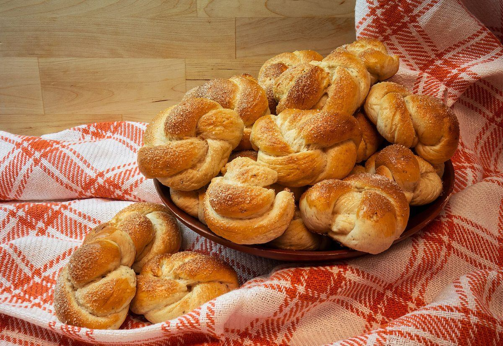

制作側の連想
足踏み式の消毒液スタンドを、配置図にしてみる
このサイトは、入口などに置かれる足踏み式の消毒液スタンドを図にしたつもりで作りました。六つの部位に番号をふり、上の図と並べています。制作側の連想で、お店の理念・由来とは無関係です。実際の製品の仕様を示すものでもありません。
凡例
六つの部位
- 1ボトル(液だめ)液体を入れておく、いちばん上の容器の部分。
- 2ポンプヘッド押し下げると液が出る、先端に吐出口のついた部分。
- 3受け皿吐出口の下に張り出して、落ちた液を受ける板。
- 4支柱底板から立ち上がって、ボトルを支える細い柱。
- 5連結ロッドペダルの動きをポンプヘッドへ伝える、細い棒。
- 6フットペダル足で踏んで操作する、底板の横に張り出した踏み板。
フォト(イメージ)
パンの写真


写真はパンのイメージです。お店のものではなく、お店で提供している商品を示すものでもありません。
フォト(イメージ)
パンとコーヒー豆の写真



写真はパンとコーヒー豆のイメージです。お店の様子を示すものではありません。
ご案内
お店のこと(確認できたものだけ)
| 所在地 | 〒840-0202 佐賀県佐賀市大和町大字久池井2955 |
|---|---|
| 電話 | 準備中 |
| 営業時間 | 準備中 |
| 定休日 | 準備中 |
| ご予約 | 準備中 |
| 駐車場 | 準備中 |
| SNS | Instagram @76pain_yamato |